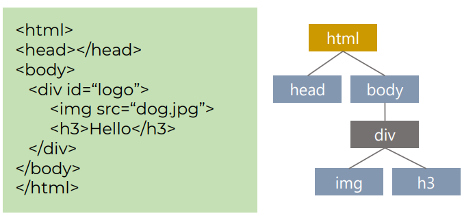
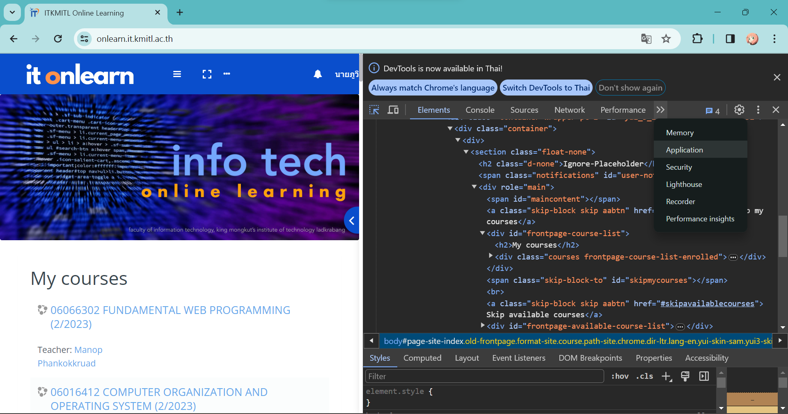

Unit1 - Introduction to Internet & Web system
Internet
- เครือข่ายที่เชื่อมต่อกันทั่วโลก
- ไม่มีใครเป็นเจ้าของ Internet
- ใช้ทำอะไรบ้าง? - Email, Social network, etc.
The World Wide Web
- Tim Berners-Lee เป็นผู้คิดค้น world wide web
- ทำงานโดยการส่ง HTML documents ด้วย Internet ผ่าน web server ไปที่ web browser
- web pages คือ ข้อมูลที่แสดงบน Internet 1 หน้า
- web site คือ web pages จำนวนมากมาประกอบเข้าด้วยกัน โดยแต่ละ web pages อาจเชื่อมโยงถึงกันได้
Client-Server Architechute
คือ software design ที่ popular มากที่สุด โดยประกอบไปด้วยสองส่วนหลักๆ คือ client-side และ server-side
Web Server & Web Browser
- Web Server (Server-side) คือ ส่วนที่ใช้สำหรับรับคำขอ(request) จาก Web Client และทำงานตามคำขอที่ได้รับ หลังจากนั้นจะทำการส่งผลลัพธ์(response) กลับไปยัง web browser
- Web Browser (Client-side) คือ ส่วนที่ส่งคำร้องขอ(request) ไปยัง web-server และเมื่อได้รับ response จาก web-server จะทำการประมวลผลและแสดงใช้ผู้ใช้เห็น
OSI Model
- Application layer จัดการประเภทในรับ-ส่งข้อมูล เช่น การเข้าหน้า website จะใช้ HTTP (เรียกข้อมูลใน layer นี้ว่า message)
- Presentation layer ควบคุมการบีบอัดและถอดรหัสข้อมูล
- Session layer ควบคุ๊มการเริ่ม-หยุดของการรับและส่งข้อมูล
- Transport layer ควมคุมวิธีการรับส่งข้อมูล กำหนด protocol ว่าจะใช้อะไร (เรียกข้อมูลใน layer นี้ว่า Segment)
- Network Layer หาเส้นทางในการรับ-ส่งข้อมูล(ระบุ IP Adress), แบ่งข้อมูลออกเป็น Package (เรียกข้อมูลใน layer นี้ว่า Datagram)
- Link layer แบ่ง Package ให้เล็กลง เช็คและซ่อม error ข้อมูล, ระบุ mac adress ที่ใกล้เคียง (เรียกข้อมูลใน layer นี้ว่า frame)
- Physical layer ส่งข้อมูลผ่าน physical(Ex. สายไฟ) เป็นBit (10100100)
Essential Protocols
- TCP (Transmission Control Protocol) คือ Protocol ที่ใช้ในการส่งข้อมูล โดยจะมีการตรวจสอบความถูกต้องว่าข้อมูลที่ส่งไปถูกต้องหรือไม่ (ส่งข้อมูลแบบเน้นถูกต้อง)
- IP (Internet Protocol) จะใช้ในการกำหนด IP Adress ให้แต่ละเครื่อง ในการส่งข้อมูล หรือก็คือกำหนดต้นทางและปลายทาง
- UDP (User Datagram Protocol) ทำหน้าที่คล้ายๆ TCP แต่จะไม่มีการตรวจสอบความถูกต้องของข้อมูลให้ (ส่งข้อมูลเน้นเร็ว)
- Dynamic Host Configuration Protocol (DHCP) ช่วยให้การ Configuration ก่อนจะเข้าถึง Internet เป็นไปแบบอัตโนมัติ
- FTP(File Transfer Protocol) ใช้เพื่อ copy file จาก host หนึ่งไปยังที่อื่นๆ
- HTTP (Hypertext Transfer Protocol) คือ protocol ที่ใช้สื่อสารกันระหว่าง web server และ web client รู้จักกันในชื่อ “request-response model”
- HTTP Secure (HTTPS) คือส่วนเสริมของ HTTP ที่ช่วยให้ปลอยภัยมากขึ้น โดยจะเพิ่มใน Encrypt โดยอาศัยเทคโนโลยี SSL (Secure Sockets Layer) หรือ TLS (Transport Layer Security)
- DNS (Domain Name System) คือส่วนที่ทำการแปลงชื่อ website หรือเรียกว่า domain name (ex. www.google.com) เป็น IP Adress (ex. 172.217.26.68) โดย DNS จะทำการจับคู่ระหว่าง Domain name กับ IP Adress
Web Development
- Front-end Development คือส่วนของการพัฒนา website ที่เน้นไปที่การพัฒนาส่วน user interacts หรือเรียกรวมๆว่าพัฒนาในส่วน client-side
- Back-end Development คือส่วนของการพัฒนา website ที่เน้นไปที่การพัฒนาในการที่ user ไม่สามารถมองเห็นและตอบโต้ได้ หรือเรียกรวมๆว่าพัฒนาในส่วน server-side
- Full-stack Development ทำทั้ง front-end และ back-end
Front-end Technologies
- HTML (Hypertext Markup Language) ใช้เพื่อสร้างโครงหน้าและใส่ข้อมูใน website
- CSS (Cascading Style Sheets) ใช้ในการตกแต่งหน้า website หรือเป็นส่วนที่กำหนดว่า หน้า website จะแสดงออกไปยังไง
- JavaScript ใช้ในการทำให้ user สามารถ interact กับ website เช่น เมื่อกดปุ่มจะให้เกิดอะไรขึ้น
- AJAX (Asynchronous Javascript and XML) ใช้เพื่อติดต่อกับฝั่ง web server
Back-end Technologies
- PHP, Python, Ruby, Java, Golang, C#, Javascript ภาษาที่คนส่วนมากใข้ในการพัฒนาฝั่ง back-end
- Node.js เป็นตัวที่ทำให้นำ Javascript มารันนอก web browser ได้ โดยสามารถใช้ตัวนี้ในการพัฒนา back-end service หรือที่เรียกว่า API ได้
- API (Application Programming Interface) เป็นตัวเชื่อมต่อระหว่าง front-end และ back-end โดย API จะกำหนดว่าโปรแกรมทั้งสองสามารถส่งข้อมูลระหว่างกันได้อย่างไร ข้อมูลอะไรที่สามารถแลกเปลี่ยนกันได้
-
Format of Data รูปแบบข้อมูลที่ใช้ในส่วน backend จะเป็น
- XML (Extensible Markup Language) จะเป็นรูปแบบข้อมูลที่กำหนดด้วย tag คล้ายๆ HTML พูดง่ายๆคือ เหมือน PDF ที่คอมพิวเตอร์อ่านได้
- JSON (JavaScripy Object Notation) จะเก็บข้อมูลในรูปแบบโครงสร้าง
Unit2 - HTML and CSS
Introduction to HTML
- HTML (Hypertext Markup Language) คือ ภาษาพื้นฐานในการสร้าง web pages โดยจะแสดงในรูปแบบ ข้อความ, รูปภาพ, input, etc.
- Hypertext ข้อความที่สามารถเชื่อโยงไปยังหน้าอื่นๆได้
- Markup Language คือภาษาที่ใช้ teg ในการแสดง content
Element Tags
คือ ส่วนหลักในการสร้าง content ในภาษา HTML โดย structure ประกอบไปด้วย
Element Attribute
คือ ข้อมูลเพิ่มเติมที่ใส่ไปใน tag เพื่อวัตถุประสงค์ต่างๆ
HTML Document Basic Structure
- ส่วนสีแดง เป็นการประกาศว่าเป็นเอกสาร HTML
- ส่วนสีเขียว คือ html element จะเป็นการกำหนดจุดเริ่มและจุดสิ้นสุดของเอกสาร เช่น
- เก็บวิธีการแสดงผลหรือ css ด้วย <style>
- เชื่อมต่อ resource ข้างนอกด้วย <link>
- เก็บหัวข้อด้วย <title>
- เก็บหัวข้อด้วย <title>
-
เก็บวิธีการ encode หรือ keyword ที่ใช้ในการ search ด้วย <meta>
- ส่วนสีน้ำเงิน คือ head element จะทำหน้าที่เก็บรายระเอียดต่างๆของเอกสาร
- ส่วนสีเหลือง คือ body element จะทำหน้าที่เก็บข้อมูลที่จะแสดงใน browser
Document Hierarchy
คือการที่มี tag ซ้อน tag กัน ซึ่งสามารถอธิบายได้ด้วย tree
จากภาพ <div id="logo"> จะมี <img> และ <h3> ซ้อนอยู่ข้างใน ซึ่งเราจะสรุปได้ว่า
- <div id="logo"> เป็น parents ของ <img> และ <h3>
- <img> และ <h3> เป็น children ของ <div id="logo">
Introduction to CSS
- CSS (Cascading Style Sheets) ใช้เพื่อควบคุมการแสดงผลของ HTML elements ซึ่ง css style สามารถใส่ใน HTML โดยตรงได้
- A style sheet คือการกำหนด “rules” ให้กับ HTML element โดย rules จะกำหนดว่า HTML element แต่ละอันจะแสดงออกไปยังไงเมื่ออยู่ใน browser
-
Cascade เป็นกฏที่ใช้กำหนดว่า css ตัวไหนจะถูกนำไปใช้กับ HTML element เมื่อมันซ้อนทับกัน
จะเห็นได้ว่า มีการกำหนดสีซ้อนกัน โดยในกรณีนี้ จะใช้กฏ cascade ในการเลือกสีใดสีหนึ่ง ซึ่งในกรณีนี้จะเป็นสีน้ำเงิน
Type of Style Sheet
- Browser Style Sheet คือ css ที่ตัว browser (ex. chrome edge opera) ใส่ให้เอง
- External Style Sheet คือ css ภายนอกที่เราใส่เข้าไปใน HTML document เช่น การเขียน css แยกมาเป็นอีกไฟล์ เช่น style.css แล้วนำมา import ใน HTML document โดยใช้ <link herf="style.css" rel="stylesheet" />
- Internal / Embedded Style Sheet คือการกำหนด css ภายใต้ tag <style> ใน HTML Document
- Inline Styles คือการกำหนด css โดยตรงใน tag เช่น <h1 style="color:blue;">this is text</h1>
Unit3 - JavaScript
Introduction to JavaScript
JavaScript เป็นภาษาการเขียนโปรแกรมแบบสคริปต์ (interpreted) ที่ใช้เพื่อสร้างปฏิสัมพันธ์และไดนามิกให้กับหน้าเว็บ โดยจะสามารถเปลี่ยนเนื้อหาบนเว็บไซต์ได้โดยที่ไม่จำเป็นต้องกด refresh หน้าใหม่
Request-Response Model
- GET Method ข้อมูลจะปรากฏอยู่บน Adress bar และ body
- POST Method ข้อมูลจะอยู่ในส่วนของ body โดยข้อมูลจะมีความ private มากกว่า
Client-side scripting benefits
- ทำให้ผู้ใช้สามารถ interact กับ HTML และ CSS ได้
-
ลดภาระให้กับ server เนื่องจากรันบนฝั่ง client (ใช้ hardware ของ user ในการประมวลผล)
- ลดการ request-response กับฝั่ง server เนื่องจากโค้ดบางส่วนรันบน cilent ได้เลย
- เนื่องจากโค้ดรันบน client การประมวลผลจะเร็ว ไม่ต้องรอ response จาก server
-
สามารถโต้ตอบกับ user ได้ (ทำ event handling ได้) เช่น คลิกเมาส์, กดปุ่ม

JavaScript Framework
คือเครื่องมือที่ทำให้เราสามารถทำงานกับภาษา JavaScript ได้ง่ายขึ้น ช่วยลดขั้นตอนในการทำงานและการเขียนโค้ด ซึ่งมีหลากหลายมาก เช่น
- React
- Angular
- Vue
- jQuery
Unit4 - Document Object Model
Document Object Model (DOM) เป็นโครงสร้างข้อมูลแบบลำดับชั้นที่แสดงเนื้อหาของหน้าเว็บ ประกอบด้วยองค์ประกอบ HTML ทั้งหมด ซึ่งเราสามารถใช้ JavaScript ในการจัดการ DOM เพื่อเปลี่ยนองค์ประกอบของ HTML Document ได้ เช่น สร้าง ลบ แก้ไข element ต่างๆใน HTML
- ทุกๆ element ใน HTML จะถูกเปลี่ยนเป็น Object (concent OOP เลย)
- เมื่อเป็น object แล้ว เราสามารถเปลี่ยนแปลง properties หรือเรียกใช้ method ได้
- จะมองโครงสร้าง HTML ต่างๆเป็น tree
Browser and DOM
เมื่อ brower ได้รับ HTML Document มา ก่อนที่จะแสดงผล brower จะทำการแปลงให้เป็น DOM tree ก่อนถึงจะแสดงผลออกไป
ตัวอย่าง
Type of DOM Nodes
- Document node จุดเริ่มต้นของ tree
- Element Node HTML tag ต่างๆ (สีฟ้า)
- Attribure Node บ่งบอกถึง attribute ของ element node (สีเขียว)
- Text Node หมายถึงข้อความที่อยู่ใน element ต่างๆ (สีเหลือง)
- Comment Node ส่วนที่ comment ไว้
- DocumentType <!DOCTYPE html>
Relationship among Nodes
- Root node คือ Node ที่อยู่บนสุด
- Parent node คือ Node ที่มี child node
- Child node คือ Node ที่อยู่ภายใต้ Parent node
- Leaf คือ Node ที่ไม่มี child node
- Siblings คือ set ของ node ที่มี parent เดียวกัน
- ทุก node จะต้องมี parent node ยกเว้น root
Unit5 - Web Data and Local Storage
JSON (JavaScript Object Notation)
JSON (JavaScript Object Notation) เป็นรูปแบบข้อมูลแบบข้อความที่ใช้เพื่อแลกเปลี่ยนข้อมูลระหว่างแอปพลิเคชันต่างๆ โดยใช้ข้อความธรรมดา รูปแบบ JSON นั้นง่ายต่อการอ่านและเขียนทั้งโดยมนุษย์และโปรแกรมคอมพิวเตอร์
- จัดเก็บเป็นรูปแบบ key/value(object) หรือ sequence(array)
- ส่วนใหญ่การสื่อสารระหว่าง web server และ web client จะใช้ข้อมูลรูปแบบนี้
ตัวอย่าง1
ในตัวอย่าง JSON จะเก็บเป็น Object เช่น
- key คือ “firstname”
- value คือ “Puwit”
ตัวอย่าง2
ในตัวอย่าง JSON จะเก็บเป็น Array ที่มีสมาชิก 3 ตัว
Convert table to JSON format (ใช้ใน lab5 ข้อ 1)
- ดูว่ามี column อะไรบ้าง ตามตัวอย่างคือ company, contact, country
- แบ่งข้อมูลว่ามีกี่ชุด ตามตัวอย่างคือ 3 ชุด
- ไล่ทำทีละชุด โดยให้ชื่อ column เป็น key และ ข้อมูลเป็น value โดยข้อมูลแต่ละชุดจะเก็บเป็น object
- เมื่อทำเสร็จทุกชุดแล้ว ให้นำข้อมูลทุกชุดไปเก็บไว้ใน array
Local Storage
จะเป็นการจัดเก็บข้อมูลของ browser ในรูปแบบ key/value ในฝั่งของ client โดยข้อมูลประเภท localStorage นั้น จะถูกจัดเก็บบนเครื่องของ client หรือก็คือข้อมูลจะถูกเก็บใน storage ของคอมพิวเตอร์ของผู้ใช้นั่นแหละ
- ข้อมูลที่เก็บจะแยกเว็บไซต์กัน เช่น localStorage ของ onlearn เว็บไซต์ที่จะเรียกใช้ข้อมูลนี้นั้นจะมีแค่ onlearn เว็บอื่นจะมาเรียกใช้ข้อมูลตรงนี้ไม่ได้
- ถ้าข้อมูลใน localStorage จะถูกเก็บไว้ตลอดแม้เราจะเปิดเครื่องหรือปิดหน้าเว็บนั้นไป ถ้าไม่ถูกลบออก
วิธีดู localStoage ของแต่ละ Website
- อยากดู localStorage ของ onlearn
- กด ctrl+shift+c เพื่อเปิดหน้า developer tools (ใน safari เหมือนจะทำไม่ได้)
- กด >> ข้างๆ tab performance และเลือก Application 
- ในเมนู Local Storage กดให้มันแสดงชื่อเว็บ onlearn หลังจากนั้นกดเข้าไปดู ก็จะเห็น localStorage ทุกอันของ Website นี้
Unit6 - Responsive Web Design
คือการทำให้เว็บไซต์แสดงผลลัพธ์ได้หลายขนาดหน้าจอ เช่น
เว็บที่ทำ Responsive
เว็บที่ไม่ทำ Responsive